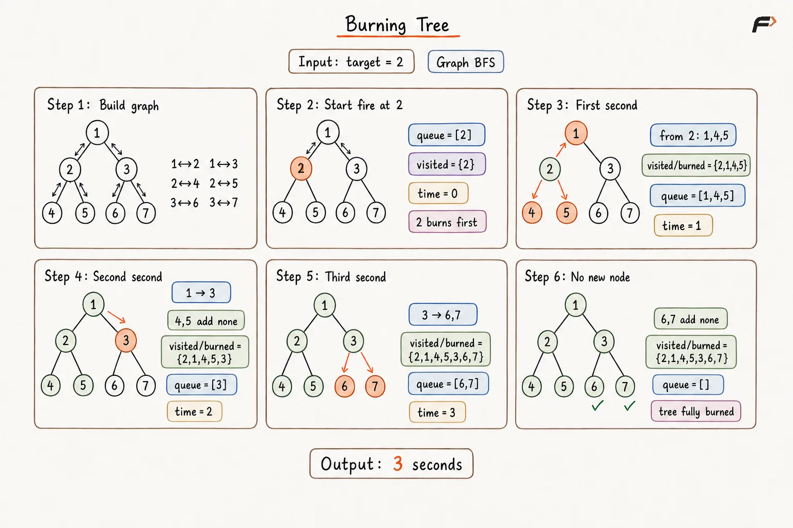
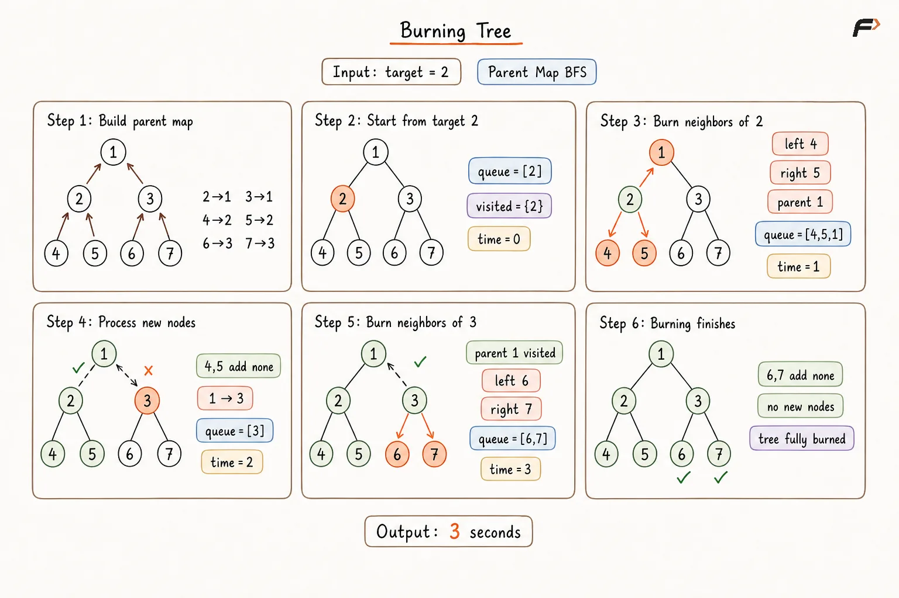
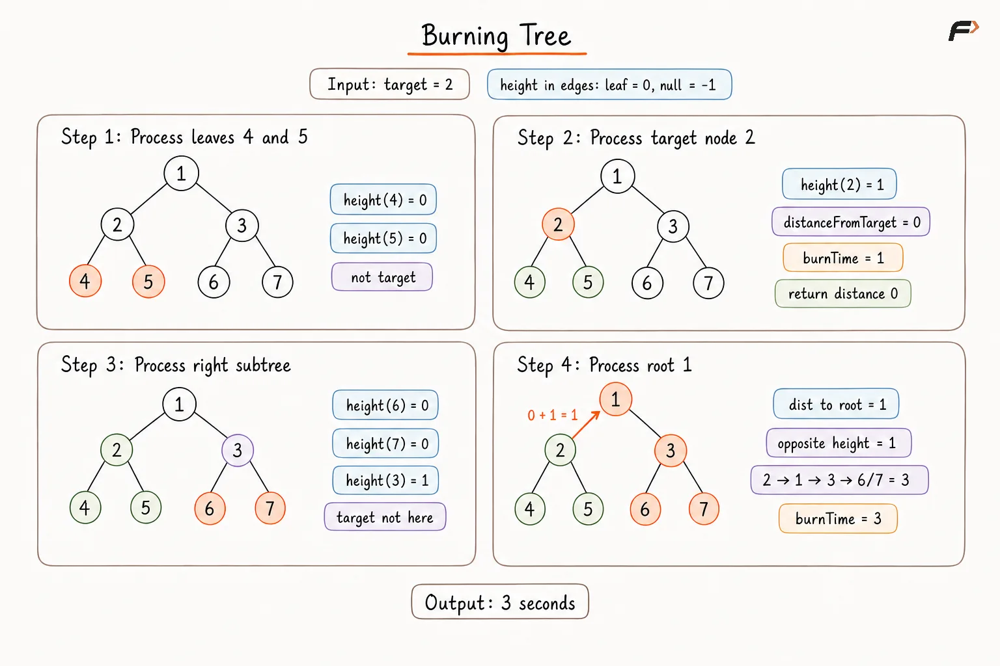

Minimum Time to Burn a Binary Tree from a Given Node
Given the root of a binary tree and a target node present in the tree, determine the minimum time required to burn the entire tree if the fire starts from the target.
The fire spreads every second from a burning node to all directly connected nodes:
its left child,
its right child,
its parent.
A node burns only once, and all possible neighboring nodes catch fire simultaneously.
Example 1
Input:root = [1, 2, 3, 4, 5, null, 6], target = 2
Output:3
Explanation:
At time 0, node 2 starts burning. After 1 second, nodes 1, 4, and 5 burn. After 2 seconds, node 3 burns, and after 3 seconds, node 6 burns. Therefore, the entire tree burns in 3 seconds.
Example 2
Input:root = [1], target = 1
Output:0
Explanation:
The target is the only node in the tree, so the complete tree is already burning at time 0.
Approach 1
A binary tree normally provides links only from a parent to its children. Burning, however, must be allowed to spread in both directions.
Therefore, every parent-child connection is converted into an undirected edge. Once this conversion is performed, the tree behaves like an undirected graph in which the fire can move to every directly connected node.
A BFS is then started from the target.
A queue is used because nodes that burn at the same second must be processed together. The variable levelSize stores the number of nodes burning during the current second so that exactly one BFS level can be processed at a time.
A set named burned is maintained to represent nodes that have already caught fire. It prevents the same node from being reached repeatedly through the bidirectional graph.
A boolean variable spread is used to record whether at least one new node caught fire during the current BFS level. Time is increased only when spread becomes true, because a second should be counted only when the fire actually reaches another node.
Algorithm
An adjacency list is constructed by traversing the binary tree, and every parent-child connection is stored in both directions so that fire can spread both upward and downward.
A BFS queue is initialized with the
target, and the target is inserted into theburnedset because it is already burning at time0.For each BFS iteration, the current queue size is stored in
levelSizeso that all nodes burning during the same second are processed together.A boolean variable
spreadis initialized asfalsebefore the current level is processed so that it can record whether the fire reaches at least one new node.For every node in the current level, all adjacent nodes that are not present in
burnedare marked as burned, inserted into the queue, andspreadis set totrue.After the complete level has been processed, the burning time is increased by
1only ifspreadistrue, because at least one new node has caught fire.The process is continued until the queue becomes empty, after which the recorded time is returned.
Dry Run

Burning Tree Approach 1 Dry Run .png
Solution
#include <bits/stdc++.h>
using namespace std;
struct TreeNode {
int val;
TreeNode* left;
TreeNode* right;
TreeNode(int value) {
val = value;
left = nullptr;
right = nullptr;
}
};
class Solution {
private:
// Builds an undirected graph so fire
// can move between parent and child.
void buildGraph(
TreeNode* node,
unordered_map<TreeNode*, vector<TreeNode*>>& graph
) {
if (node == nullptr) {
return;
}
// Both directions are stored because
// fire can spread upward and downward.
if (node->left != nullptr) {
graph[node].push_back(node->left);
graph[node->left].push_back(node);
buildGraph(node->left, graph);
}
if (node->right != nullptr) {
graph[node].push_back(node->right);
graph[node->right].push_back(node);
buildGraph(node->right, graph);
}
}
public:
// Returns the minimum time required
// to burn the complete tree.
int minTime(
TreeNode* root,
TreeNode* target
) {
if (root == nullptr) {
return 0;
}
unordered_map<TreeNode*, vector<TreeNode*>> graph;
buildGraph(root, graph);
queue<TreeNode*> nodesQueue;
unordered_set<TreeNode*> burned;
nodesQueue.push(target);
// The target starts burning at time 0,
// so it is marked before BFS begins.
burned.insert(target);
int time = 0;
while (!nodesQueue.empty()) {
int levelSize = nodesQueue.size();
// spread records whether at least one
// new node catches fire this second.
bool spread = false;
// levelSize keeps all nodes burning
// during the same second together.
for (int i = 0; i < levelSize; i++) {
TreeNode* node = nodesQueue.front();
nodesQueue.pop();
for (TreeNode* neighbor : graph[node]) {
if (burned.find(neighbor) == burned.end()) {
burned.insert(neighbor);
nodesQueue.push(neighbor);
spread = true;
}
}
}
// Time advances only when the fire
// actually spreads to another node.
if (spread) {
time++;
}
}
return time;
}
};
int main() {
TreeNode* root = new TreeNode(1);
root->left = new TreeNode(2);
root->right = new TreeNode(3);
root->left->left = new TreeNode(4);
root->left->right = new TreeNode(5);
root->right->right = new TreeNode(6);
TreeNode* target = root->left;
Solution solution;
cout << solution.minTime(root, target) << endl;
return 0;
}Complexity Analysis
Let N be the number of nodes in the binary tree.
Time Complexity: O(N), where N is the number of nodes in the binary tree. Every tree edge is added to the adjacency structure a constant number of times, and every node is processed at most once during BFS.
Space Complexity: O(N). The adjacency list, burned set, and BFS queue can together store information for up to N nodes.
Approach 2
Constructing a complete undirected graph is unnecessary because every node already provides references to its left and right children.
The only missing connection is:
child → parent
Therefore, a map named parentTrack can be maintained. The name indicates that it is used to track the parent of each node, allowing the fire to move upward during BFS.
After this preprocessing, every node effectively has at most three neighbors:
left child,
right child,
parent.
A queue is then used to simulate the burning process level by level.
The variable levelSize stores how many nodes are burning during the current second. A set named burned keeps track of nodes that have already caught fire so that the fire cannot move back and forth between a node and its parent.
A boolean variable spread records whether any new node catches fire during the current level. The elapsed time is increased only when this happens.
Algorithm
A queue-based traversal is performed from the root, and a map named
parentTrackis constructed so that every non-root node is associated with its parent.The root is stored with no parent, or is treated separately, because no node exists above it.
A BFS queue is initialized with the
target, and the target is inserted into theburnedset because it burns at time0.At the beginning of each BFS level, the number of currently burning nodes is stored in
levelSize, whilespreadis initialized asfalse.For every node in that level, its left child, right child, and mapped parent are examined.
Whenever an existing neighbor has not already been burned, it is inserted into
burnedand the queue, whilespreadis set totrue.After all
levelSizenodes have been processed, the elapsed time is increased only whenspreadistrue, indicating that the fire has reached at least one new node.Once the queue becomes empty, the recorded time is returned as the minimum time required to burn the entire tree.
Dry Run

Burning Tree Approach 2 Dry Run .png
Solution
#include <bits/stdc++.h>
using namespace std;
struct TreeNode {
int val;
TreeNode* left;
TreeNode* right;
TreeNode(int value) {
val = value;
left = nullptr;
right = nullptr;
}
};
class Solution {
private:
// Builds child-to-parent links so fire
// can also spread upward.
void buildParentTrack(
TreeNode* root,
unordered_map<TreeNode*, TreeNode*>& parentTrack
) {
queue<TreeNode*> nodesQueue;
nodesQueue.push(root);
// The root has no parent, so nullptr
// marks the end of upward movement.
parentTrack[root] = nullptr;
while (!nodesQueue.empty()) {
TreeNode* node =
nodesQueue.front();
nodesQueue.pop();
if (node->left != nullptr) {
parentTrack[node->left] = node;
nodesQueue.push(node->left);
}
if (node->right != nullptr) {
parentTrack[node->right] = node;
nodesQueue.push(node->right);
}
}
}
public:
// Simulates the fire using left,
// right, and parent connections.
int minTime(
TreeNode* root,
TreeNode* target
) {
if (root == nullptr) {
return 0;
}
unordered_map<TreeNode*, TreeNode*> parentTrack;
buildParentTrack(
root,
parentTrack
);
queue<TreeNode*> nodesQueue;
unordered_set<TreeNode*> burned;
nodesQueue.push(target);
burned.insert(target);
int time = 0;
while (!nodesQueue.empty()) {
int levelSize =
nodesQueue.size();
// spread tells whether fire moved
// to at least one new node.
bool spread = false;
// levelSize represents all nodes
// burning during the current second.
for (int i = 0; i < levelSize; i++) {
TreeNode* node =
nodesQueue.front();
nodesQueue.pop();
if (
node->left != nullptr &&
burned.find(node->left) == burned.end()
) {
burned.insert(node->left);
nodesQueue.push(node->left);
spread = true;
}
if (
node->right != nullptr &&
burned.find(node->right) == burned.end()
) {
burned.insert(node->right);
nodesQueue.push(node->right);
spread = true;
}
TreeNode* parent =
parentTrack[node];
// parentTrack supplies the upward
// connection missing from the tree.
if (
parent != nullptr &&
burned.find(parent) == burned.end()
) {
burned.insert(parent);
nodesQueue.push(parent);
spread = true;
}
}
// One second is counted only if
// at least one new node burns.
if (spread) {
time++;
}
}
return time;
}
};
int main() {
TreeNode* root = new TreeNode(1);
root->left = new TreeNode(2);
root->right = new TreeNode(3);
root->left->left = new TreeNode(4);
root->left->right = new TreeNode(5);
root->right->right = new TreeNode(6);
TreeNode* target = root->left;
Solution solution;
cout << solution.minTime(root, target) << endl;
return 0;
}Complexity Analysis
Let N be the number of nodes in the binary tree.
Time Complexity: O(N), where N is the number of nodes in the binary tree. Building parentTrack visits every node once, and the subsequent BFS processes every node at most once.
Space Complexity: O(N). The parentTrack map, burned set, and BFS queue can each contain information for up to N nodes in the worst case.
Approach 3
The total burning time is equal to the maximum distance from the target to any node in the tree.
Instead of explicitly creating parent connections and simulating every second, this maximum distance can be determined using postorder DFS.
For every subtree, two pieces of information are useful:
heightrepresents how far the deepest node lies below the current subtree.distanceFromTargetrepresents the distance from the current node to the target. A value of-1indicates that the target is absent from that subtree.
Suppose the target is found in the left subtree. If distanceFromTarget represents the distance from the current node to the target, the fire can reach a node in the opposite right subtree by travelling:
target → current node → right subtree
If the opposite subtree has height oppositeHeight, the total distance to its deepest node becomes:
distanceFromTarget + 1 + oppositeHeight
The additional 1 represents the edge from the current node into the root of the opposite subtree.
The same reasoning is applied symmetrically when the target lies in the right subtree.
By evaluating this maximum distance at every ancestor, the farthest node from the target is found.
Algorithm
A postorder DFS is performed so that information from the left and right child subtrees is available before the current node is processed.
For every subtree, its
heightis calculated so that the maximum downward distance available through that subtree is known.A value named
distanceFromTargetis maintained to represent the number of edges between the current node and the target, while-1is used when the target is absent from that subtree.When the target itself is reached,
distanceFromTargetis set to0, and the subtree height is used to account for nodes lying below the target.If the target is found in the left subtree, its returned distance is increased by
1to obtain the current node'sdistanceFromTarget.The farthest distance through the opposite right subtree is then calculated using
distanceFromTarget + 1 + rightHeight, where the additional1represents the edge from the current node to the right child.The same calculation is performed symmetrically when the target is found in the right subtree, using the height of the left subtree.
The maximum burning distance is updated whenever a larger candidate is obtained, and
distanceFromTargetis propagated upward.After the root has been completely processed, the maximum recorded distance is returned as the minimum burning time.
Dry Run

Burning Tree Approach 3 Dry Run .png
Solution
#include <bits/stdc++.h>
using namespace std;
struct TreeNode {
int val;
TreeNode* left;
TreeNode* right;
TreeNode(int value) {
val = value;
left = nullptr;
right = nullptr;
}
};
class Solution {
private:
struct Info {
int height;
int distanceFromTarget;
};
// Returns subtree height and the distance
// from the current node to the target.
Info dfs(
TreeNode* node,
TreeNode* target,
int& maxTime
) {
if (node == nullptr) {
return {-1, -1};
}
Info left =
dfs(node->left, target, maxTime);
Info right =
dfs(node->right, target, maxTime);
int height =
1 + max(left.height, right.height);
// When target is reached, its subtree
// height gives the farthest downward burn.
if (node == target) {
maxTime = max(
maxTime,
height
);
return {height, 0};
}
if (left.distanceFromTarget != -1) {
int distanceFromTarget =
left.distanceFromTarget + 1;
// The route moves from target to this
// ancestor, then one edge into the
// opposite subtree and to its deepest node.
maxTime = max(
maxTime,
distanceFromTarget
+ 1
+ right.height
);
return {
height,
distanceFromTarget
};
}
if (right.distanceFromTarget != -1) {
int distanceFromTarget =
right.distanceFromTarget + 1;
// The left subtree is the opposite
// branch when target lies on the right.
maxTime = max(
maxTime,
distanceFromTarget
+ 1
+ left.height
);
return {
height,
distanceFromTarget
};
}
return {height, -1};
}
public:
// Finds the maximum distance from target
// without storing explicit parent links.
int minTime(
TreeNode* root,
TreeNode* target
) {
if (root == nullptr) {
return 0;
}
int maxTime = 0;
dfs(
root,
target,
maxTime
);
return maxTime;
}
};
int main() {
TreeNode* root = new TreeNode(1);
root->left = new TreeNode(2);
root->right = new TreeNode(3);
root->left->left = new TreeNode(4);
root->left->right = new TreeNode(5);
root->right->right = new TreeNode(6);
TreeNode* target = root->left;
Solution solution;
cout << solution.minTime(root, target) << endl;
return 0;
}Complexity Analysis
Let N be the number of nodes in the binary tree and H be the height of the tree.
Time Complexity: O(N), where N is the number of nodes in the binary tree. Every node is processed once during the postorder traversal.
Space Complexity: O(H), where H is the height of the binary tree, due to the recursion stack. This becomes O(N) for a skewed tree and O(log N) for a balanced tree.
Interview follow-up Questions
Fire spreads through exactly one edge every second. BFS also explores nodes one edge farther from the starting node at each level, so one BFS level corresponds directly to one second.